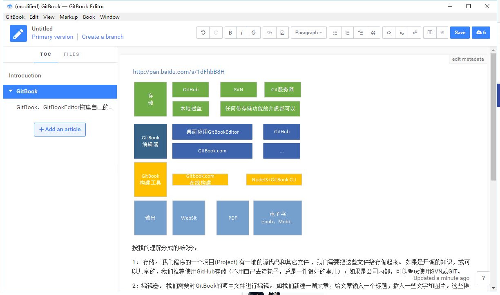

GitBook结构

按我的理解分成的4部分。
1： 存储。 我们程序的一个项目(Project) 有一堆的源代码和其它文件 ，我们需要把这些文件给存储起来。 如果是开源的知识，或可以共享的，我们推荐使用GitHub存储（不用自己去造轮子，总是一件很好的事儿）；如果是公司内部，可以考虑使用SVN或GIT。
2：编辑器。 我们需要对GitBook的项目文件进行编辑。 如我们新建一篇文章，给文章输入一个标题，插入一些文字和图片。这些操作最好由可视化的编辑器来完成。 如果是本地，可以使用GitBook Editor来编辑；在线可以使用登录到GitBook.com在线操作。

3：构建工具。使用构建工具将GItBook Project输出成我们想要的格式。如一个Web站点，或者是PDF等。
相关参考
- 官网 https://www.gitbook.com/
- 【Gitbook】实用配置及插件介绍 http://blog.csdn.net/zhangjk1993/article/details/50380403
- GitBookEditor 7.X百度网盘
链接：http://pan.baidu.com/s/1qXJE7Re密码：9xlx